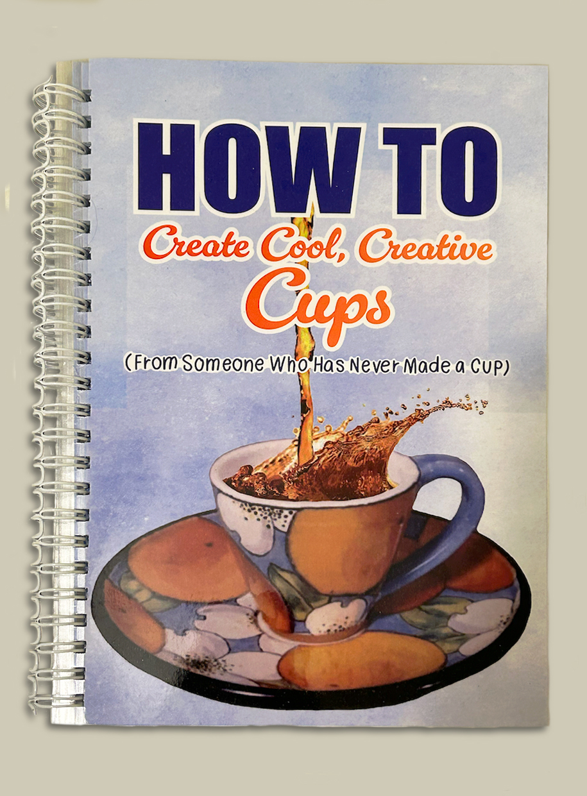
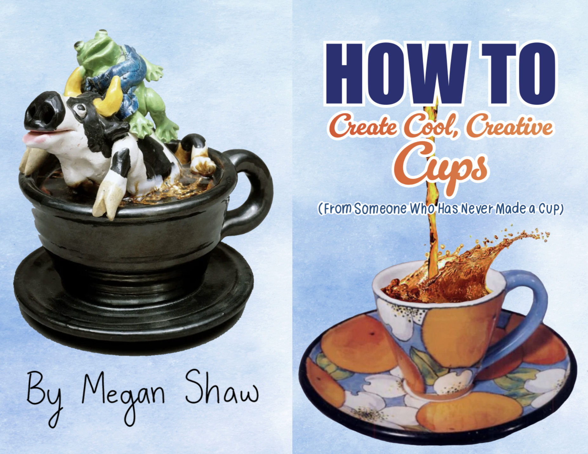
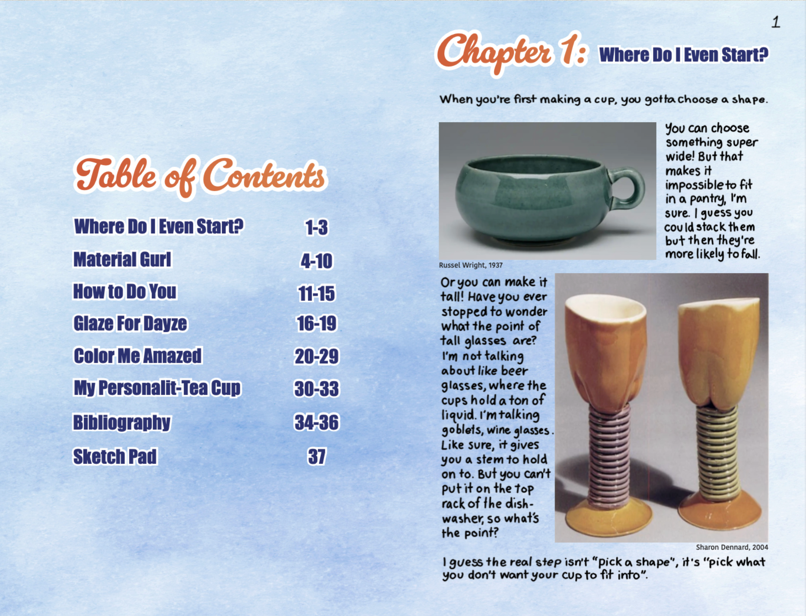
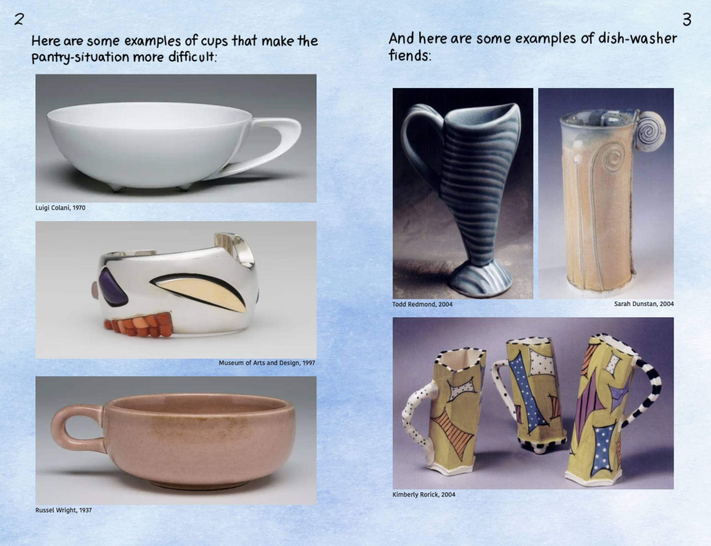

Utilitarian Book
Fall 2023




For this project, I was instructed to design a zine about a utilitarian object. So I made an 80 page book that satirically described how cups are made. I used Adobe InDesign to design each of the spreads. The body text is also my own handwriting that I scanned in, in order to make the book feel more personal and human. The book is 5.5 inches, by 8.5 inches, and has spiral binding. I even laminated it by hand, so it could function as a cup rest if desired. I wanted the book to look like something anyone could make themselves, so the book is quite personal and comical in tone.